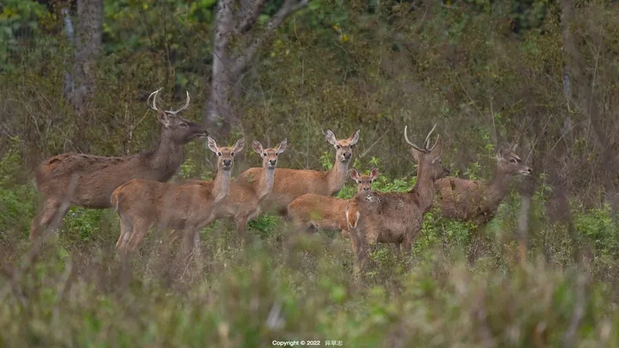

哺乳动物 · 动物界
坡鹿 Rucervus eldii

东南亚与中国海南的珍稀鹿类，雄鹿角向前弯曲如弓，喜欢在草坡和林缘活动，因栖息地丧失和捕猎而濒危。
- 分类
- 门脊索动物门纲哺乳纲目偶蹄目科鹿科属坡鹿属
- 栖息环境
- 热带干草原、稀树草原与林缘草地，偏好开阔草坡
- 地理分布
- 印度、缅甸、泰国、老挝、越南及中国海南岛
- 保护级别
- IUCN 濒危（EN）；中国国家一级保护动物
物种志
坡鹿体长 1.5–1.8 米，肩高 1.0–1.2 米，体重 60–150 kg，雄性大于雌性。它的被毛为红棕至黄褐色，背脊有一条深色纵纹，腹部较浅；雄鹿的角很长，向前弯曲如弓，角上有多道横棱，最下一叉特别长，雌鹿无角。
坡鹿分布于东南亚的印度、缅甸、泰国、老挝、越南和中国海南岛，栖息于热带干草原、稀树草原和林缘草地，偏好开阔的草坡。它以草、嫩叶和灌木为食，结成数只至数十只的群体，雄鹿在繁殖季用角争夺配偶。坡鹿多在晨昏活动，善奔跑和跳跃。雌性妊娠期约 8 个月，每胎 1 仔。由于农业开发和非法捕猎，坡鹿数量急剧下降，被列为濒危；中国海南的坡鹿种群曾一度仅剩数十只，经保护区保护后有所恢复，被列为国家一级保护动物。
形态与习性
- 食性草、嫩叶与灌木
- 体长1.5–1.8 m，肩高 1.0–1.2 m
- 体重60–150 kg，雄性大于雌性
- 寿命野外约 15–20 年
- 繁殖妊娠期约 8 个月，每胎 1 仔
- 角雄鹿角向前弯曲如弓，上有多道横棱
- 种群中国海南种群经保护后有所恢复
趣味知识
- 坡鹿的角向前弯曲如弓，形状在鹿类中很有特色。
- 中国海南的坡鹿曾一度只剩数十只，经保护后逐渐恢复。
- 坡鹿喜欢在开阔草坡和林缘活动，善奔跑和跳跃。
- 中国将坡鹿列为国家一级保护动物。